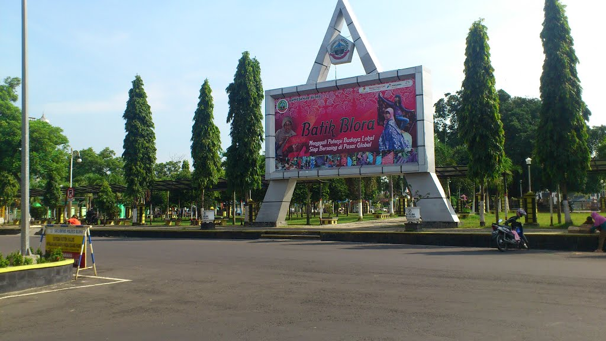
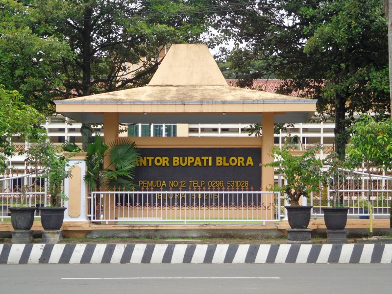
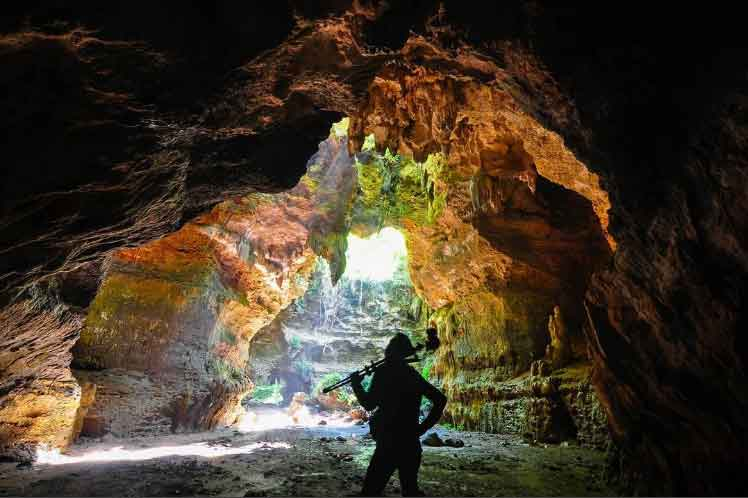
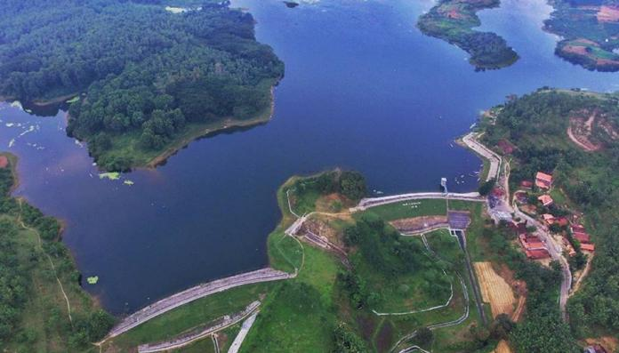
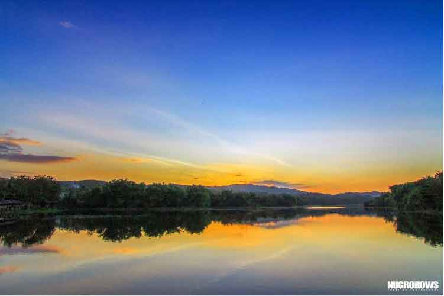

Sejarah

Menurut cerita rakyat Blora berasal dari kata BELOR yang berarti lumpur, kemudian berkembang menjadi mbeloran yang
akhirnya sampai sekarang lebih dikenal dengan nama BLORA.
Menurut cerita rakyat Blora berasal dari kata BELOR yang berarti lumpur, kemudian berkembang menjadi mbeloran yang
akhirnya sampai sekarang lebih dikenal dengan nama BLORA.Secara etimologi Blora berasal dari kata WAI + LORAH. Wai
berarti air, dan Lorah berarti jurang atau tanah rendah.
Dalam bahasa Jawa sering terjadi pergantian atau pertukaran huruf W dengan huruf B, tanpa menyebabkan perubahan
arti kata. Sehingga seiring dengan perkembangan zaman kata WAILORAH menjadi BAILORAH, dari BAILORAH menjadi Balora
dan kata Balora akhirnya menjadi Blora.
Jadi nama Blora berarti tanah rendah berair, ini dekat sekali dengan pengertian tanah berlumpur.
Geografis

Wilayah Kabupaten Blora terdiri atas dataran rendah dan perbukitan dengan ketinggian 20-280 meter dpl. Bagian utara
merupakan kawasan perbukitan, bagian dari rangkaian Pegunungan Kapur Utara. Bagian selatan juga berupa perbukitan
kapur yang merupakan bagian dari Pegunungan Kendeng, yang membentang dari timur Semarang hingga Lamongan (Jawa
Timur). Ibu kota kabupaten Blora sendiri terletak di cekungan Pegunungan Kapur Utara.
Separuh dari wilayah Kabupaten Blora merupakan kawasan hutan, terutama di bagian utara, timur, dan selatan. Dataran
rendah di bagian tengah umumnya merupakan areal persawahan.
Sebagian besar wilayah Kabupaten Blora merupakan daerah krisis air (baik untuk air minum maupun untuk irigasi) pada
musim kemarau, terutama di daerah pegunungan kapur. Sementara pada musim penghujan, rawan banjir longsor di
sejumlah kawasan.
Kali Lusi merupakan sungai terbesar di Kabupaten Blora, bermata air di Pegunungan Kapur Utara (Rembang), mengalir
ke arah barat melintasi kota Purwodadi yang akhirnya bergabung dengan Kali Serang.
Wisata
Tempat wisata di Kabupaten Blora:

Seperti halnya pacitan, blora juga ternyata mempunyai wisata alam goa yang tak kalah indahnya. Yaitu goa terwanag yang berolakasi di daerah jalan yang menghubungkan Todanan – Blora , Kec Todanan, Blora.
Jika anda mencari goa terawang, goa ini bisa anda temukan di hutan jati yang di kelola oleh perhutani setempat. Kawsan wisata ini mempunyai luas sekitar 13 hektar dengan satu gua utama yang berukuran besar, 5 goa mungil dan juga satu sendang. Wisata alam goa terawang blora mempunyai pemandangan yang indah untuk anda jadikan objek foto yang menarik.
Selain ini di kawasan wisata ini sudah di bangun taman bermain untuk anak anak. Oleh karena itu tempat ini cocok sebagai wisata keluarga di kabupaten blora.

Wisata alam blora selanjutnya adalah waduk bentolo yang berlokasi di kecamatan Todanan, Lokasi waduk ini tidak jauh dari gua terawang. jadi setalah anda berkunjung ke goa terawang anda bisa melanjutkan kegiatan berwisata ke wisata air waduk bentolo.
Waduk bentolo ini sebenarnya berfungsi sebagai area penampungan air yang di gunakan sebagai penyuplai air di sawah atau kebun penduduk, tapi karena tempatnya yang indah dan nyaman, waduk ini pun sekaligus di jadikan tempat wisata yang menarik.

Selain mempunyai waduk bentolo yang sangat menarik untuk di kujungi, blora juga memiliki waduk tempuran yang tak kalah indahnya. Waduk tempuran ini berlokasi di desa tempuran Kec Blora, Kab Blora. Waduk ini mempunyai luas sekiatar 4600 hektar. luas banget ya, seperti di waduk wadaslintang wonosobo.
Wisata air ini juga ternyata menjadi favorit tujuan wisata masayarakat lokal dan juga kabupaten tetangga seperti Grobogan, pati dan juga kudus. Apalagi jikalau liburan telah tiba, wisatwan dari lokal maupun luar kota yang berbondong bondong datang ke tempat ini.
Selain itu di pinggir waduk tempuran ini banyak pendukduk sekitar yang membuka warung dan menjajakan berbagai macam barang atau makanan. banyak juga makanan khas blora yang di jajakan di tempat ini.